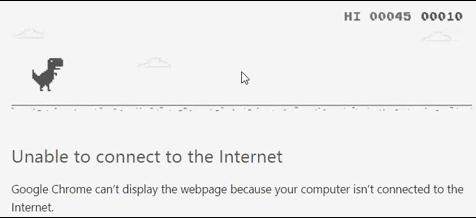
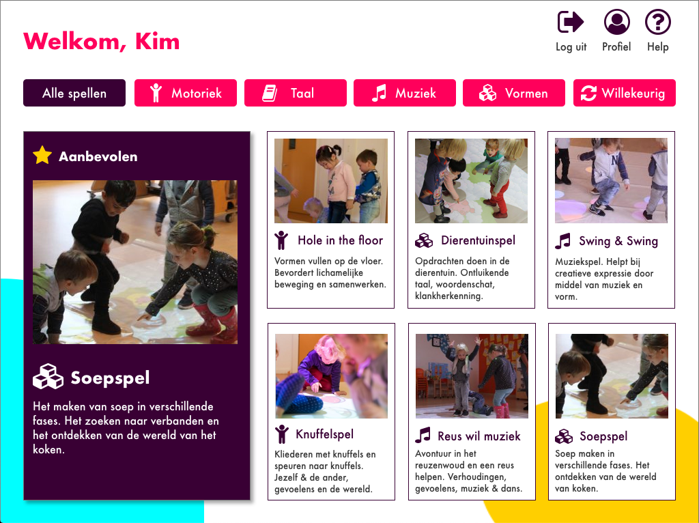
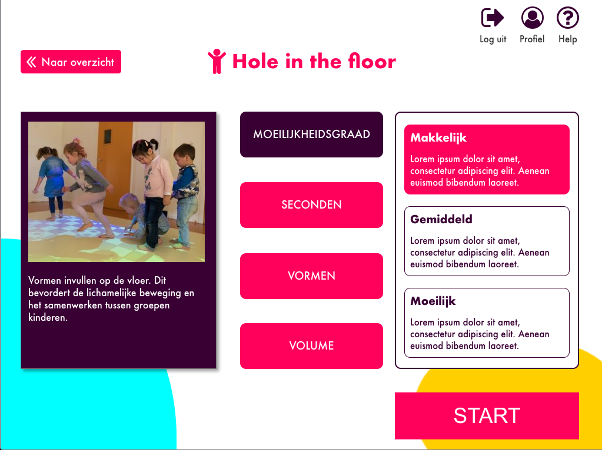
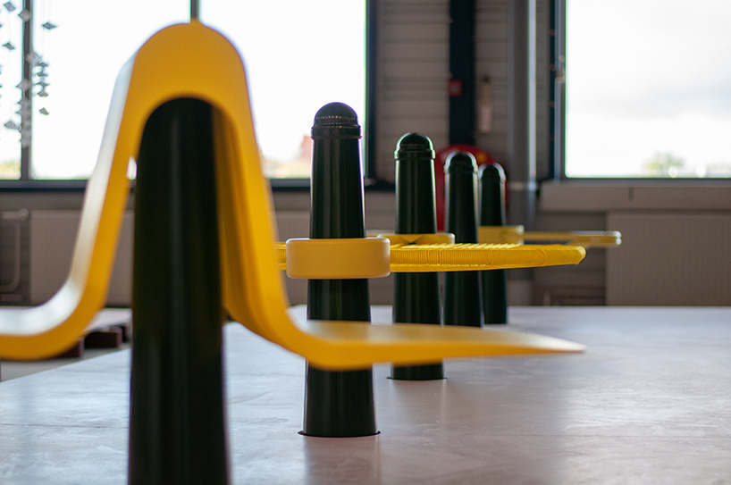

As seen in the lecture, people often experience a much higher motivation than usual when one implements playful interfaces and interaction. When something’s (made) fun, people tend to choose hard over easy way more often. Take the ‘piano stairs’ shown in the lecture. Far more people took the stairs over the escalator that day, simply because it was more fun. I'll be diving further into Playful Interaction in this challenge.
Research
404: DINOSAUR
One very well-executed example of playful interaction is that of Google Chrome's. The T-Rex Run, also known as the No Internet Game is a built-in feature that will pop up when a page can’t load due to not being connected to the internet. This is a very good application of playful interaction. It makes the unpleasant experience of having no internet connection fun and bearable by implementing a game element. The game is in fact endless, so it doesn’t matter for how long your internet is down. The game keeps speeding up as one progresses, though, and once you hit something it is GAME OVER.
You don’t have to disconnect your internet to play the game, as Chrome-users can simply type chrome://dino in their address bar, to boot the game.
Beweegvloer
An interesting playful interaction, which I helped design, is the ‘Beweegvloer’. This loosely translates to ‘Move Floor’. The idea behind this was to teach young children (ages 2 to 4) skills like math, recognition and language. It worked based on a projection coming from the ceiling, which would project all sorts of games on to the floor. The children would then play the game, whilst learning a different variety of skills. The company that was developing the Beweegvloer, also developed an app and interface with which to control the Beweegvloer. That’s where my project team and I played our part. We did research to determine the user needs, made personas, a site map, sketches and a style guide to help us through the design process, and we then started building prototypes. This all led to the following interface as hi-fi prototype:


More information on the Beweegvloer project can be found here.
Amsterdammertje
During my research I stumbled on another interesting project. Peruvian architect and designer Beatriz Peró Giannini designed a series of furniture add-ons which can be attached to pavement posts. She designed a total of three different furniture pieces known as the Rocker, the Slider and the Wobbler. The three add-ons require communication, balance and cooperation and therewith create interaction between the users themselves as well as between the users and the furniture.
The designer’s goal with this project was to create meaningful, positive and spontaneous interactions. This goal is emphasized by the fact that neither one of the three products functions properly if used by only one person; cooperation is required to make full use of the product.
Tinkering
For the tinkering part of this Playful Interaction challenge, I wanted to acquaint myself better with Processing and Arduino. I wanted to see what demos I could come up with using the programs individually, but also while using both Processing and Arduino together. By combining the two, I would undoubtedly face new problems and challenges, then when working with either one of them individually.
Recommended by dentists
The first demo for this challenge is a smart mirror with integrated countdown display. The countdown is intended for young children, to teach them how long they should be brushing their teeth for.
Of course, the norm for this is 2 minutes. I chose to use dots instead of numbers to display the 2 minutes, because young children might not be able to count as high as 60 yet. The numbers wouldn’t make any sense to them, so that’s why I used a total of 36 dots instead. The display will decrease with one dot per 3.33 seconds. Once all dots are gone, the 2 minutes are up. The display then shows ‘OK’ and a checkmark, to compliment the child, and verify that the time is up. All this is activated with the touch of a button.
Check the accompanying video and Arduino code below.
Or actually, click the dice. For the second demo as part of the Playful Interaction challenge, I made a die (apparently, that’s how you say that) using both Processing and Arduino. It’s both playful and convenient, as you don’t have to worry about bringing dice to play certain games or to take a chance...
The display cycles through the numbers 1 to 6 in random order very fast by default. Once a red square is clicked in Processing, a random number will be generated and sent to Arduino through the serial. The square changes color from red, its default color, to green for one second after it has been clicked. The random number is received by Arduino and corresponds to the matching number’s output on the display. The generated random number will display for a total of five seconds, after which the display will return to default setting and cycle through the numbers 1 to 6 once more.
During the coding of this demo, I ran into some problems with the random number generator only repeating one and the same number over and over. I eventually fixed the issue by placing the integer numberIndex (the random number generator) inside the void mouseClicked function, to make sure it would generate a new number each time.
Check out the die in action in the video, and see corresponding Arduino and Processing code below.
For Playful Interaction’s third demo, I made a touch version of Tic Tac Toe! I used Arduino’s capacitive touch library and setup to accomplish the touch part of this demo. Each sensor would send a value to Arduino which would then be remapped, assigned to a variable and sent to Processing through the serial. In Processing, I used the void draw function to draw two horizontal and two vertical lines. This created a 3 by 3 grid as playing field. I assigned the incoming values from the Arduino to specific positions in the grid. Finally, I made sure the output in Processing would alternate between X’s and O’s, respectively.
Unfortunately, I was not able to make the Tic Tac Toe fully function, as I was limited to a maximum of six capacitive sensor inputs on the Arduino. Therefore, only the first two rows function. Adding the third row would be identical to the first two, given that I would have more ports available on the Arduino.
Watch the video to see Tic Tac Toe Touch in use! The corresponding code is to be found below.
For the design & build part of this challenge, I wanted to make a product that could actually be realized. In line with the Playful theme of this challenge, I decided to develop a product that would help children in some way. I started thinking and researching various applications of playful interaction. At one point I knew what I wanted to do for the final product of this challenge: interactive storytelling.
Interactive storytelling is a form of storytelling where the storyline hasn’t been predetermined, and actually depends on the user’s input. Whether that be in a game, on Netflix, or in this case, a book.
I wanted to make an interactive story that would be suitable for an electronically enhanced book. It would basically come down to a book with some sort of interchangeable display as output, as well as a button or other form of input.
Before I started to actually make the interactive storytelling product through coding and the appropriate hardware, I wanted to have the story ready. Therefore, I started with that. It was harder than I thought to write a story with multiple different outcomes and variables. It was especially difficult to create events that wouldn’t depend on the outcome of previous variables. I soon learned I had to keep the story very generic, so that it would still make sense regardless.
Once I finished the story, I started setting up everything in Arduino and Processing. I wanted to keep the Arduino part quite simple; just one input as a button to determine the variables for the story in Processing. I then went over to Processing to create String arrays for the variables. Those would be determined randomly using the random function in Processing.
In Processing, the story would partially show from the start. All the variables were left blank at first. By clicking the button on the Arduino, Processing would fill in the blanks randomly, using the now filled variables. There are a total of 10 variables within the story.
Check the video to see a handful of random stories generated in Processing. I’ve also made the Arduino and Processing code available below.
Don’t forget to check the Showcase video for the finalized product!
Processing code
import processing.serial.*;
Serial myPort;
int serialIndex = 0;
int buttonReading;
String[] wordsCreature = {" robot", "n alien", " clown", "n astronaut"};
String[] wordsName = {"Bonzo", "Coco", "Tink", "Drak", "Emex", "Frun"};
String[] wordsTown = {"Bubbletucky", "Dinkletown", "Middlington", "Glickersville", "Wuzzleburg"};
String[] wordsCity = {"Basin City", "Stepford", "Hillwood", "Metropolis"};
String[] wordsWaitingtime = {"just 3 minutes", "10 minutes", "17 minutes", "half an hour", "almost an hour"};
String[] wordsEnvironment1 = {"went through mountain passes", "passed open fields", "drove by other villages", "drove along the coast"};
String[] wordsEnvironment2 = {"went through tunnels", "went over hills", "drove through a forest", "passed through a swamp"};
String[] wordsFood = {"a hamburger", "pancakes", "some French fries", "pasta Bolognese", "noodlesoup"};
String[] wordsWakeuptime = {"8 AM", "9 AM", "11 AM", "1 PM"};
String[] wordsShop = {"candy shop", "bakery", "book shop", "café", "pet shop", "toy store", "florist"};
int indexCreature = int(random(wordsCreature.length));
int indexName = int(random(wordsName.length));
int indexTown = int(random(wordsTown.length));
int indexCity = int(random(wordsCity.length));
int indexWaitingtime = int(random(wordsWaitingtime.length));
int indexEnvironment1 = int(random(wordsEnvironment1.length));
int indexEnvironment2 = int(random(wordsEnvironment2.length));
int indexFood = int(random(wordsFood.length));
int indexWakeuptime = int(random(wordsWakeuptime.length));
int indexShop = int(random(wordsShop.length));
String creature = "...";
String name = "...";
String town = "...";
String city = "...";
String waitingtime = "...";
String environment1 = "...";
String environment2 = "...";
String food = "...";
String wakeuptime = "...";
String shop = "...";
void setup() {
size(500, 500);
myPort = new Serial(this, Serial.list()[serialIndex], 9600);
myPort.bufferUntil('\n');
}
void draw() {
background(255);
fill(0);
text("There once was a" + creature + " named " + name + ". " + name + " lived in a small town called " + town + "." + "\n" +
"There was not much to do in " + town + ", so one day " + name + " packed his bags to go " + "\n" +
"to the big city, " + city + ". " + name + " walked to the nearest bus stop and waited for " + "\n" +
waitingtime + ". The bus arrived and " + name + " got on. ‘Where to?’, the bus driver asked. " + "\n" +
city + " please, " + name + " said. He sat down and looked out the window. The bus " + "\n" +
environment1 + " and " + environment2 + ". After about one hour, " + "\n" +
name + " could see " + city + " in the distance. 20 minutes later the bus stopped. " + "\n" +
name + " was pretty hungry, and went into a restaurant. He sat down and ordered " + "\n" +
food + ". After eating, he went to the apartment he rented. It was " + "\n" +
"pretty late, so " + name + " decided to go to sleep. The next day, he got up at " + wakeuptime + " and " + "\n" +
"walked to the nearby mall. " + name + " went into a " + shop + ". He saw a sign that said " + "\n" +
"'HELP WANTED!'. 'I've always wanted to work at a " + shop + "', he thought. " + "\n" +
"He decided to take the job. " + name + " really enjoyed working at the " + shop + ". He decided to " + "\n" +
"stay in " + city + " and never went back to " + town + ". THE END." , 20, 20);
if (myPort.available() > 0){
buttonReading = myPort.read();
if(buttonReading == 1){
creature = wordsCreature[indexCreature];
}
else if(buttonReading == 2){
name = wordsName[indexName];
}
else if(buttonReading == 3){
town = wordsTown[indexTown];
}
else if(buttonReading == 4){
city = wordsCity[indexCity];
}
else if(buttonReading == 5){
waitingtime = wordsWaitingtime[indexWaitingtime];
}
else if(buttonReading == 6){
environment1 = wordsEnvironment1[indexEnvironment1];
}
else if(buttonReading == 7){
environment2 = wordsEnvironment2[indexEnvironment2];
}
else if(buttonReading == 8){
food = wordsFood[indexFood];
}
else if(buttonReading == 9){
wakeuptime = wordsWakeuptime[indexWakeuptime];
}
else if(buttonReading == 10){
shop = wordsShop[indexShop];
}
}
}
Arduino code
const int buttonPin = 2;
int buttonPushCounter = 0;
int buttonState = 0;
int lastButtonState = 0;
void setup() {
pinMode(buttonPin, INPUT);
Serial.begin(9600);
}
void loop() {
buttonState = digitalRead(buttonPin);
if (buttonState != lastButtonState) {
if (buttonState == HIGH) {
buttonPushCounter++;
Serial.write(buttonPushCounter);
}
else {
}
delay(200);
}
lastButtonState = buttonState;
}
Showcase
Are your kids tired of the same bedtime stories over and over again? That won’t be a problem any longer with interactive storytelling! Interactive storytelling is an ever changing story; it will be different every time you read it. Children would even be able to progress through the story themselves, with just one button click.
Interactive storytelling can keep children entertained far longer than traditional stories. It also helps them learn new words and numbers, using the correct articles, and could even teach them new cities and countries. Interactive storytelling makes it fun to learn.
Check out the finalized product below!
Reflect
Playful Interaction: the topic and its future
I think Playful Interaction is a great way to put some fun back into people’s lives. Everything is so serious already; it’s good to let go once in a while. In addition, I think Playful Interaction can be a great way to motivate people to be healthier, responsible and make better choices, by making everyday things playful and fun to do. If playful interactions can be integrated into our lives without anyone noticing all too much, I think it can really have a positive effect on people’s behavior and choices. Moreover, Playful Interaction is a great way to teach people, especially children, all sorts of things. This directly ties in to my final product.
My final product
For the Playful Interaction challenge, I found it easier to come up with ideas for the demos and my final product. I think that is because the subject is quite broad, and it can use technologies explored in the previous three challenges. Also, over the course of HCI I became more skilled at Arduino. Being able to combine Arduino and Processing, of which I have limited yet apparently sufficient knowledge, at least for what I wanted to do. I am happy with how the interactive storytelling product turned out, as one can really imagine the product in real life; at least I can.
Experience with Playful Interaction
I haven’t had much experience with Playful Interaction, apart from the earlier mentioned ‘Beweegvloer’ project in the research part of this challenge. I do like to include some small easter eggs within my designs, so that could count as playful. As stated above, I think Playful Interaction can really help people make better choices and be healthier, so I’d like to see these things more often in real life. For one, I myself would definitely take piano stairs over a boring old escalator. The Playful Interactions I have encountered are often small things, mostly webpage based. For example, one webpage had a small truck at the top of the page, that would indicate how far down you were on that specific page.
 Before I started to actually make the interactive storytelling product through coding and the appropriate hardware, I wanted to have the story ready. Therefore, I started with that. It was harder than I thought to write a story with multiple different outcomes and variables. It was especially difficult to create events that wouldn’t depend on the outcome of previous variables. I soon learned I had to keep the story very generic, so that it would still make sense regardless.
Before I started to actually make the interactive storytelling product through coding and the appropriate hardware, I wanted to have the story ready. Therefore, I started with that. It was harder than I thought to write a story with multiple different outcomes and variables. It was especially difficult to create events that wouldn’t depend on the outcome of previous variables. I soon learned I had to keep the story very generic, so that it would still make sense regardless.